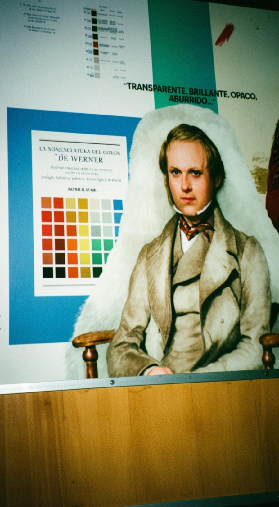

Una persona con colores nunca está sola.
Una charla muy interesante "Traigamos el color de vuelta", impartida por la reconocida ponente internacional Sara Viloria Escritora, Poeta, Artista visual, Colorista y Divulgadora cultural.
Teoría
del Color
Conferencia
Objetivo del sitio
Este sitio documenta la asistencia a la charla impartida por Sara Viloria, en la Universidad ECCI el 27 de mayo 2026. Donde aprendimos que el color es la promesa de algo y el material es la ejecución y lo más importante que nada te enseña más sobre color y hasta de la vida que pasear y observar.
Todo el contenido de conferencias en español e inglés.
Más de 15 términos técnicos con definición de Cambridge.
Reflexión sobre economía circular y responsabilidad.
HTML5, CSS3, JavaScript y Bootstrap 5.
Pantone · Paleta del evento
Los códigos Pantone son referenciales, basados en la paleta cromática del evento.
